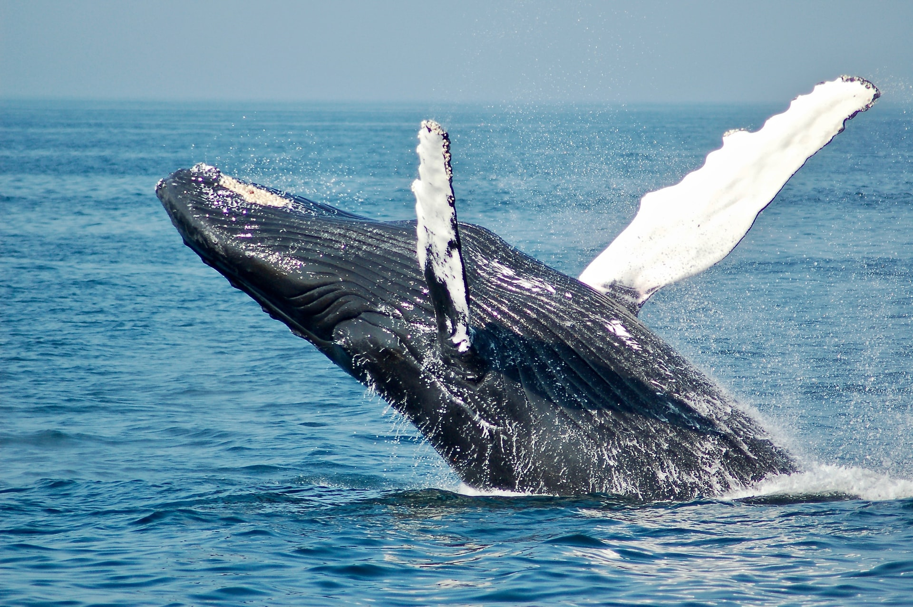

고래목 긴수염고래과의 포유류로 몸길이가 11∼16m, 몸무게는 30∼40t이다.
몸 전체에 사마귀와 같은 기생충이 많이 붙어 있는데, 그것이 탈락되면 흰색의 자국이 남는다. 수염은 좌우에 각각 약 350개나 나 있다.
수염 가운데 가장 큰 것은 너비 30㎝, 길이 70㎝가 넘는 것도 있다. 머리 부분은 편평하고 중앙과 바깥면에는 융기된 돌기가 있다.

분기(噴氣:고래가 물 위로 떠올라 숨을 내쉬는 것)는 V자형을 이루며, 높이 3m로 다른 수염고래에 비해 낮은 편이다. 이 고래는 영리하여 포경선의 습격을 받게 되면 외양으로 도망가기 시작한 뒤 점점 회유의 방향을 바꾸어 다른 해상으로 이동한다. 호흡의 수는 1시간에 10∼20회이다. 주로 크릴새우(남극새우)와 작은 물고기를 먹는다. 번식기는 겨울이고, 임신기간은 약 1년이며, 몸길이 4.5∼5m의 새끼를 낳는다. 태평양·대서양에 분포한다.